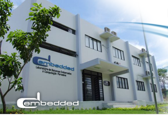
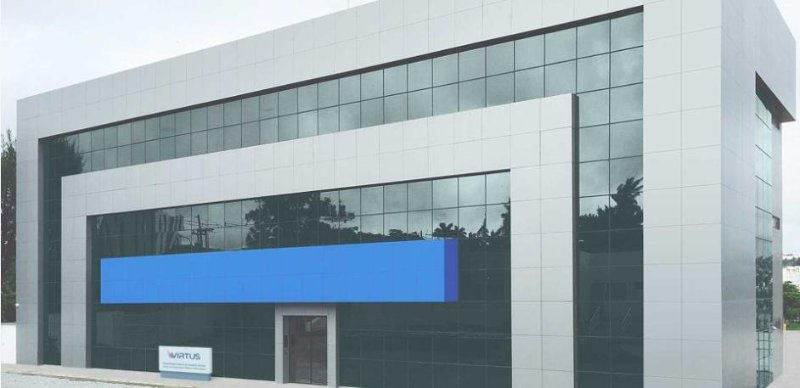

O Laboratório de Sistemas Embarcados e Computação Pervasiva (Embedded) faz parte do Centro de Engenharia Elétrica e Informática (CEEI) da Universidade Federal de Campina Grande (UFCG), em Campina Grande, Paraíba. Fundado em dezembro de 2005, o laboratório possui histórico de parcerias com grandes empresas, em projetos relacionados à sua área de atuação. Além do altíssimo nível técnico respaldado pela competência de docentes dos cursos de Engenharia Elétrica e Ciência da Computação da UFCG, oferecemos um processo organizacional e de acompanhamento de projetos que trazem a certeza do sucesso ao investimento de nossos parceiros.

Núcleo de Pesquisa, Desenvolvimento e Inovação em Tecnologia da Informação, Comunicação e Automação – é um órgão suplementar da Universidade Federal de Campina Grande (UFCG) vinculado ao Centro de Engenharia Elétrica e Informática (CEEI). Com a visão de se tornar referência internacional em desenvolvimento e inovação tecnológica, o VIRTUS foi fundado por pesquisadores do CEEI com mais de 15 anos de experiência em projetos de pesquisa e desenvolvimento.At Quimbik we take care of business by providing excellent work and great value. That’s why we have long-term relationships with existing clients, as well as a continuous flow of new business. Today I work as a android Engineer.